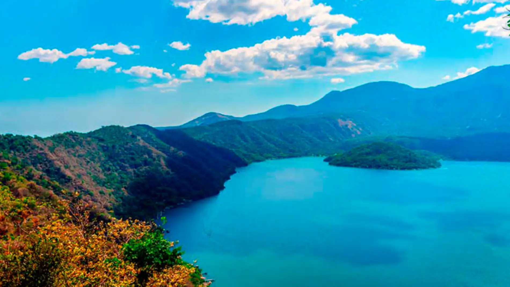

Lago de coatepeque
Ubicado en Santa Ana, a 18 kilómetros al sur de la capital del departamento y a 61 kilómetros de San Salvador, está el Lago Coatepeque, uno de los mejores destinos turísticos del Salvador. Este lago fue el cráter de un volcán por lo que cuenta con zonas de aguas termales donde se puede disfrutar del contraste de temperaturas entre la superficie caliente y el fondo con aguas heladas. Asimismo, desde el mirador del Parque Nacional de Los Volcanes, podrás apreciar una vista panorámica del lago y su agua turquesa.
El Tazumal
Un escenario arqueológico fascinante que revela a través de sus estructuras parte del sofisticado desarrollo constructivo alcanzado por la cultura maya, figurando entre estos testimonios, las ruinas de sus antiguos sistemas de drenaje de aguas y los vestigios de lo que alguna vez fueron sus tumbas, pirámides y templos. Un museo que exhibe piezas y objetos encontrados en el sitio terminan por complementar su visita, destacando entre sus joyas arqueológicas la escultura del dios Xipe Totec, mítica divinidad conocida como “nuestro señor el desollado”, en cuyo honor se mataban y desollaban a esclavos y cautivos para luego cubrir la figura del dios con la piel de las víctimas.
Cerro "EL PITAL"

Situado a una elevación de 2.730 metros sobre el nivel del mar corresponde al sitio más alto del Salvador, un espectacular escenario natural característico por sus bosques de coníferas y una niebla constante que difumina las tonalidades verdes del paisaje. Su punto más famoso corresponde a la Peña Rajada, mirador natural sobre una inmensa roca, desde la cual se observa San Ignacio, La Palma, y parte de la zona fronteriza con Honduras y Guatemala.